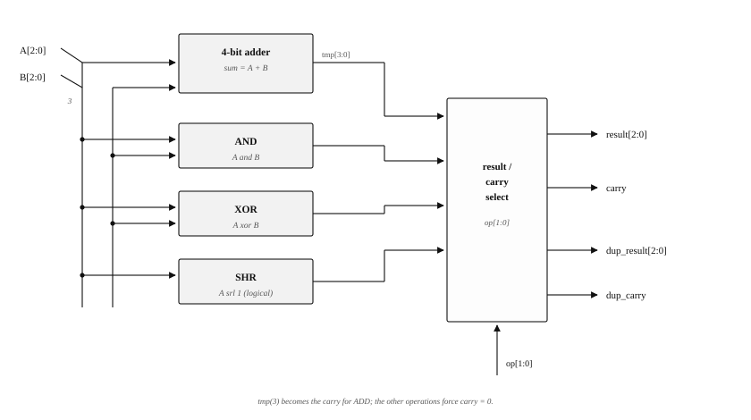
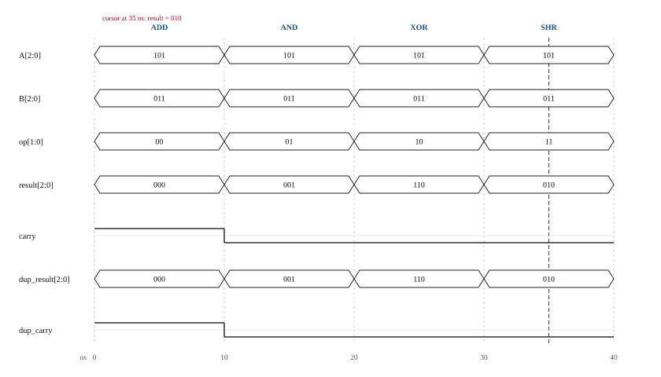

本次实验的目的，是不再把加法器当成一个大的布尔表达式，而是做一个由两位操作码选择运算的小型算术逻辑单元（ALU）。ALU 有两个三位操作数 A 和 B、一个操作码 op[1:0]，输出三位结果和一位进位。四种运算分别是加法、按位与、按位异或，以及把 A 逻辑右移一位。
除了做出能工作的电路，这次实验还有四个目的。第一，复习前两次实验的组合逻辑流程：写 VHDL、仿真、约束引脚、综合、实现、下载。第二，有意识地使用 VHDL 的类型转换。手册提示 srl 只适用于 BIT_VECTOR，不适用于 STD_LOGIC_VECTOR，这是课程中第一次“不转换就编译不过”的地方。第三，练习位切片与拼接：四位和由 ('0' & A) + ('0' & B) 得到，移位结果由 '0' & A(2 downto 1) 得到。第四，通过 PMOD 接口用逻辑分析仪观察同样的信号，而不是只相信 LED。
最终完成的是一个纯组合逻辑设计。测试平台给出四段激励，每段对应一种运算，波形上四段结果互不相同。板级实现把操作数接到 SW0–SW5，把操作码接到 SW6–SW7，把结果接到 LD0–LD2，把进位接到 LD3。复制输出 dup_result 和 dup_carry 接到 JA1–JA4，供逻辑分析仪使用。报告同时回答检查点 3：如果要实现七种运算，VHDL 需要怎样修改。
在写任何 VHDL 之前，先用表 1 把行为固定下来。最关键的一列是“进位”：只有加法可能从第 2 位产生进位，因此与、异或和移位都把进位强制为 0。先固定这一列，可以避免“逻辑运算时进位没有赋值”这种常见错误。
| op[1:0] | 运算 | result[2:0] | carry |
|---|---|---|---|
| 00 | ADD | (A + B) mod 8 | A + B ≥ 8 时为 1，否则为 0 |
| 01 | AND | A 与 B 按位与 | 0 |
| 10 | XOR | A 与 B 按位异或 | 0 |
| 11 | SHR | A 逻辑右移一位 | 0 |
加法在四位上进行。在每个操作数前面拼接一个 '0'，就把操作数扩展成四位；和的第四位正好是第 2 位的进位：
用算术语言说，结果是 (A + B) 对 8 取模，进位在 A + B 不小于 8 时恰为 1。与和异或按位进行，进位没有意义，所以接 0。移位时结果最高位为 0，A 的低两位下移：result = '0' & A(2 downto 1)。这是逻辑移位，不是算术移位，旧符号位不会复制。三位操作数下，A = 101 右移一位是 010，不是 110。
手册里有一个容易看漏的细节：sll 和 srl 是为 BIT_VECTOR 定义的，不是为 STD_LOGIC_VECTOR 定义的。如果 A 声明为 STD_LOGIC_VECTOR，直接写 A srl 1 在 VHDL-93 下编译不过。因此设计先转换成 BIT_VECTOR，移位，再转换回来：
这个转换是显式的，而且把移位放在“运算符确实存在”的类型域里。另一个不太显眼的细节是选择语句的默认分支。手册的译码器例子在 when others 里写了 "ZZZZ"；那是共享总线用的三态值，不适合作为内部多路选择器的默认值。本设计改用具体的默认值，并把移位放在最后一个具名分支，这样 when others 覆盖移位以及仿真时刻可能出现的 "UU" 等值。
代码清单 1 是完整的实体和结构体。实体名是 ALU，与文件名 alu.vhd 一致，因为 Vivado 添加源文件时使用文件名，名字不一致会让顶层更难找。所有端口名都与手册和 XDC 完全一致。
与模板相比，第一处改动是库子句。模板只用了 IEEE.STD_LOGIC_1164.ALL。这个包定义了类型和逻辑运算符，但没有在 STD_LOGIC_VECTOR 上定义算术 +。加入 IEEE.STD_LOGIC_UNSIGNED.ALL 后，四位向量的 + 才是我想要的无符号加法。另一种写法是用 NUMERIC_STD 加 unsigned(...) 转换；用 unsigned 包可以让代码更接近手册的提示，也避免在加法器周围写四次转换。
和在并发赋值中只算一次，随后两个选择信号赋值根据 op 选出结果和进位。with op select 是并发语句，等价于一个多路选择器加无寄存器输出；没有进程，没有敏感列表，也不会产生锁存器。每个分支都赋了值，最后一个分支是 when others，所以四种编码以及仿真时刻的元值都有定义。
复制输出只是 result_t 和 carry_t 的并发副本。它们不是第二个 ALU，也不改变逻辑；它们存在是因为 LED 引脚和 PMOD 排针是不同引脚，逻辑分析仪需要在 JA 上看到副本。综合器会把两份都保留下来，因为两份都驱动输出引脚。
library IEEE;
use IEEE.STD_LOGIC_1164.ALL;
use IEEE.STD_LOGIC_UNSIGNED.ALL;
entity ALU is
Port ( A : in STD_LOGIC_VECTOR (2 downto 0);
B : in STD_LOGIC_VECTOR (2 downto 0);
op : in STD_LOGIC_VECTOR (1 downto 0);
result : out STD_LOGIC_VECTOR (2 downto 0);
carry : out STD_LOGIC;
dup_result : out STD_LOGIC_VECTOR (2 downto 0);
dup_carry : out STD_LOGIC);
end ALU;
architecture Behavioral of ALU is
signal result_t : STD_LOGIC_VECTOR (2 downto 0);
signal carry_t : STD_LOGIC;
signal tmp : STD_LOGIC_VECTOR (3 downto 0);
begin
-- 4-bit sum: tmp(3) is the carry-out, tmp(2 downto 0) is the 3-bit result.
tmp <= ('0' & A) + ('0' & B);
with op select
result_t <= tmp(2 downto 0) when "00",
A and B when "01",
A xor B when "10",
to_stdlogicvector(to_bitvector(A) srl 1) when others;
with op select
carry_t <= tmp(3) when "00",
'0' when others;
result <= result_t;
carry <= carry_t;
dup_result <= result_t;
dup_carry <= carry_t;
end Behavioral;
代码清单 2 是测试平台。实体端口列表为空，因为仿真没有引脚。元件声明重复 ALU 的端口，端口映射使用具名关联。我在实验二吃过按位置映射的亏：端口顺序一改，设计仍然能展开，但操作数被接反，波形看起来“合理”却是错的。
四段激励都保持 A = 101、B = 011。这样选是为了让四个结果互不相同：5 + 3 = 8 得 000、进位 1；5 与 3 得 001；5 异或 3 得 110；5 >> 1 得 010。如果两种运算产生相同结果，操作码接错时波形可能看不出来。
| 时间 (ns) | op | 运算 | A | B | result | carry |
|---|---|---|---|---|---|---|
| 0–10 | 00 | ADD | 101 | 011 | 000 | 1 |
| 10–20 | 01 | AND | 101 | 011 | 001 | 0 |
| 20–30 | 10 | XOR | 101 | 011 | 110 | 0 |
| 30–40 | 11 | SHR | 101 | 011 | 010 | 0 |
每次赋值后都有 wait for 10 ns，最后的 wait; 让进程停住。如果没有最后的 wait，进程会立刻重复，波形上只剩最后一段，前三段只是一串 delta 周期的模糊。给 A、B、op 的初值让第一个 delta 周期就是确定的，因此第一次赋值之前波形也有定义。
begin
-- Named port mapping: the order of the ports in the entity does not matter.
uut: ALU PORT MAP (A => A,
B => B,
op => op,
result => result,
carry => carry,
dup_result => dup_result,
dup_carry => dup_carry);
siggen: PROCESS
begin
-- 5 + 3 = 8 : result 000, carry 1
op <= "00";
wait for 10 ns;
-- 5 AND 3 = 1
op <= "01";
wait for 10 ns;
-- 5 XOR 3 = 6
op <= "10";
wait for 10 ns;
-- 5 >> 1 = 2
op <= "11";
wait for 10 ns;
-- Stop the process; without this wait the process would run forever.
wait;
end PROCESS siggen;
end Behavioral;
表 3 把端口映射到 Basys 3。操作数用 SW0–SW5，操作码用 SW6–SW7，结果用 LD0–LD2，进位用 LD3。四个 JA 引脚复制同样的值，供逻辑分析仪使用。引脚编号来自 Basys 3 主 XDC，不是凭记忆写的。
| 信号 | 引脚 | 板上元件 |
|---|---|---|
| A[2:0] | V17, V16, W16 | SW0, SW1, SW2 |
| B[2:0] | W17, W15, V15 | SW3, SW4, SW5 |
| op[1:0] | W14, W13 | SW6, SW7 |
| result[2:0] | U16, E19, U19 | LD0, LD1, LD2 |
| carry | V19 | LD3 |
| dup_result[2:0] | J1, L2, J2 | JA1, JA2, JA3 |
| dup_carry | G2 | JA4 |
XDC 里有两个细节。第一，get_ports 里的名字必须与 VHDL 完全一致，包括下标：写 {A[0]}，不是 {A0}。名字不一致不会阻止综合，但实现时会报告端口未布局，信号永远到不了引脚。第二，每个引脚都要有 IOSTANDARD LVCMOS33；缺少 IOSTANDARD 会在实现时触发 DRC 错误。CFGBVS 和 CONFIG_VOLTAGE 按主 XDC 的写法在整个设计里设置一次。
复制输出是 result_t 和 carry_t 的副本，因此 LED 和逻辑分析仪看到的是同一个信号。没有副本时，分析仪只能去探 LED 引脚，而 LED 引脚并没有引到排针。四个 JA 引脚也是实体比运算表多出两个输出端口的原因。
图 2 是预期 Vivado 会推断出的数据通路。加法器是四位进位链；与、异或和移位是各自独立的组合逻辑块；输出选择是由 op 控制的四选一多路选择器。手册第 5 页的 RTL 原理图显示了同样的块，Vivado 给它们起名 RTL_ADD、RTL_AND、RTL_XOR、RTL_RSHIFT 和 RTL_MUX。具体门数不重要，重要的是没有锁存器。选择语句的每个分支都赋值，因此设计是纯组合逻辑。

图 3 是四段激励的波形。顶部的阶段标签依次标出 ADD、AND、XOR、SHR。光标在 35 ns，位于 SHR 段，此时 result = 010、carry = 0。表 4 重复了这些值，便于不读波形标签也能核对。
| 阶段 | op | A | B | result | carry | dup_result | dup_carry |
|---|---|---|---|---|---|---|---|
| ADD | 00 | 101 | 011 | 000 | 1 | 000 | 1 |
| AND | 01 | 101 | 011 | 001 | 0 | 001 | 0 |
| XOR | 10 | 101 | 011 | 110 | 0 | 110 | 0 |
| SHR | 11 | 101 | 011 | 010 | 0 | 010 | 0 |
有三处值得核对，而不只是看结果。第一，carry 只在第一段为 1；如果与或异或段出现 1，说明进位的选择赋值写错了。第二，dup_result 和 dup_carry 必须严格跟随 result 和 carry；不一致说明端口映射或副本接错。第三，10 ns 处的跳变是干净的：测试平台每次变化后等满 10 ns，采样点上不会残留 delta 周期的毛刺。
同一组激励可以直接在 XSim 里运行。图 3 是按仿真值重画的矢量图，不是截图，这样打印出来数字仍然清楚；检查点达成指南里列出了需要截图的窗口。

表 5 列出板级测试的十组输入。前四组练习加法与进位，包括两行“结果为 000、进位为 1”的情况；接下来四组练习与和异或；最后两组练习移位。开关模式按 SW7 到 SW0 书写，可以当成一个字节来读；具体哪个物理开关对应哪一位，以板上印的标签为准。
| # | A | B | op | result | carry | LD3..LD0 | SW7..SW0 |
|---|---|---|---|---|---|---|---|
| 1 | 011 | 010 | 00 | 101 | 0 | 0101 | 00 010 011 |
| 2 | 111 | 001 | 00 | 000 | 1 | 1000 | 00 001 111 |
| 3 | 110 | 011 | 00 | 001 | 1 | 1001 | 00 011 110 |
| 4 | 111 | 111 | 00 | 110 | 1 | 1110 | 00 111 111 |
| 5 | 110 | 101 | 01 | 100 | 0 | 0100 | 01 101 110 |
| 6 | 101 | 011 | 01 | 001 | 0 | 0001 | 01 011 101 |
| 7 | 101 | 011 | 10 | 110 | 0 | 0110 | 10 011 101 |
| 8 | 110 | 101 | 10 | 011 | 0 | 0011 | 10 101 110 |
| 9 | 101 | 000 | 11 | 010 | 0 | 0010 | 11 000 101 |
| 10 | 111 | 000 | 11 | 011 | 0 | 0011 | 11 000 111 |
有两行特别容易误判。7 + 1 = 8 时 result = 000、carry = 1，LED 显示 1000 而不是 0000，因为 LD3 是进位。7 + 7 = 14 时结果是 110、进位 1，模式是 1110。若只看 LD2–LD0，这两行都像失败。移位行也要注意：5 >> 1 是 2（010），不是 6（110），因为这是逻辑移位，新的最高位是 0。
开关顺序是另一个实际陷阱。板上 SW0 在拨码开关组的一端，SW7 在另一端；表中按 SW7 到 SW0 书写。设置时按板上印的标签，而不是从左往右数。表 5 的预期值与生成 alu_expected.csv 的参考模型来自同一份代码，因此表 1、表 5 和 CSV 不会互相矛盾，除非模型本身错了。
手册要求讨论：如果要实现七种运算，VHDL 要怎样改。最干净的做法是把 op 扩展到三位：两位只能给出四种编码，再多的译码也变不出另外三种。表 6 列出七种运算和保留编码。
| op[2:0] | 运算 | result[2:0] | carry |
|---|---|---|---|
| 000 | ADD | (A + B) mod 8 | A + B ≥ 8 时为 1 |
| 001 | SUB | (A − B) mod 8 | A ≥ B（无借位）时为 1 |
| 010 | AND | A 与 B | 0 |
| 011 | OR | A 或 B | 0 |
| 100 | XOR | A 异或 B | 0 |
| 101 | SHR | A >> 1 | 0 |
| 110 | SHL | A << 1（对 8 取模） | 0 |
| 111 | 保留 | 000 | 0 |
数据通路有三处扩展。输出选择变成八选一多路选择器。加法器由 ADD 和 SUB 共用：减法在二进制补码里是 A + (not B) + 1，所以 diff <= ('0' & A) + (not ('0' & B)) + "0001"。移位组增加 SHL，即 A(1 downto 0) & '0'。与、或、异或复用原来的门。
有三个细节容易错。第一，多出的 op 位需要引脚：Basys 3 上 SW8 是 V2，XDC 必须增加 op[2]。第二，保留编码 111 应输出确定值（000，进位 0），而不是 'Z'。第三，SUB 的进位不是 diff(3)，而是它的反，因为 diff(3) = 1 表示 A < B，也就是有借位；not diff(3) 才是“无借位”标志。
七运算测试平台每一段用不同的操作数，使七个结果互不相同：001、101、100、111、011、010、110。这样操作码接反时一眼就能看出来。完整设计在 alu_7ops.vhd，测试平台在 alu_7ops_tb.vhd；下面的清单只摘出运算选择和进位选择。
signal sum : STD_LOGIC_VECTOR (3 downto 0);
signal diff : STD_LOGIC_VECTOR (3 downto 0);
begin
sum <= ('0' & A) + ('0' & B);
diff <= ('0' & A) + (not ('0' & B)) + "0001";
with op select
result_t <= sum(2 downto 0) when "000",
diff(2 downto 0) when "001",
A and B when "010",
A or B when "011",
A xor B when "100",
to_stdlogicvector(to_bitvector(A) srl 1) when "101",
A(1 downto 0) & '0' when "110",
"000" when others;
with op select
carry_t <= sum(3) when "000",
not diff(3) when "001",
'0' when others;

实验 2 在 PMOD 排针上观察同样的信号。接线是：黑线接 GND，棕线接 JA1，红线接 JA2，橙线接 JA3，黄线接 JA4。黑线必须接 GND，不能接 VCC；PMOD 引脚图把 5、11 脚标为 GND，把 6、12 脚标为 VCC。接错会得到一条直线，某些分析仪上还可能损坏输入。
PulseView 设为 D0 上升沿触发、5 M 采样点、1 MHz 采样率。触发通道是 JA1 = dup_result[0]，也就是结果的 LSB。当 B = 000、op = 00 时，结果等于 A，所以 D0 就是 A(0)；每次 A 从偶数变奇数它都会上升，这个边沿启动采集。
| 分析仪通道 | JA 引脚 | ALU 信号 | 含义 |
|---|---|---|---|
| D0 | JA1 | dup_result[0] | 结果 LSB |
| D1 | JA2 | dup_result[1] | 结果第 1 位 |
| D2 | JA3 | dup_result[2] | 结果 MSB |
| D3 | JA4 | dup_carry | 进位 |
图 5 是预期采集结果。前八步让 A 从 000 扫到 111，B = 000。D0 每步翻转，D1 每两步翻转，D2 每四步翻转，D3 保持 0。最后两步令 B = 001、A = 111；7 + 1 = 8 得 result = 000、carry = 1，所以 D3 变高，D0–D2 变低。这是整段采集中唯一出现进位的地方。

手册正文写“5 M 采样点、1 MHz”，第 10 页截图却显示 1 M 采样点、20 kHz。两者都有效：5 M @ 1 MHz 给出 5 s 窗口、1 μs 分辨率；1 M @ 20 kHz 给出 50 s 窗口、50 μs 分辨率。手拨开关时慢速设置更从容；如果拨得快，就用快速设置。指南里两种都给出，到实验台再选。
矢量图有一个局限：它是理想采集。真实采集会在每个边沿出现短促的开关抖动，因为分析仪足够快，能记录到抖动。抖动不是 ALU 故障。如果波形像台阶，并在台阶处多出很窄的脉冲，那是开关，不是逻辑。
这条流程里有几个错误很容易犯，每一个都指向不同的环节。记下修正方法比只贴最终代码更有用。
这个 ALU 满足四种运算的要求。设计是纯组合逻辑，加法的进位正确，逻辑运算把进位强制为 0，移位是逻辑移位。复制输出让 JA 上能看到内部值，而不改变逻辑。测试平台给出四个互不相同的结果，板级表覆盖了最容易误读的进位情况。
这次实验最有用的部分不是算术，而是“先用表固定行为，再用测试平台核对表”的纪律。四位和用 tmp(3) 作进位只是一个小技巧，但它省掉了一条单独的进位等式，并使加法与进位必然一致。移位转换是课程中第一次遇到“信号类型决定可用运算符”的情况，显式转换比在注释里声称“这是逻辑移位”更清楚。
检查点 3 说明，同样的结构可以通过更宽的选择器和共用的加减法单元扩展到七种运算；代价主要是多一个开关和更宽的 XDC。保留编码提醒我们：扩展操作码一定会产生必须定义的编码，而 when others 就是定义它们的地方。
设计已经可以上板。剩下的工作是在实验台上核对表 5 的十组用例，并采集逻辑分析仪波形；报告中的图是矢量重画，便于保持数字清楚，指南列出了需要补拍的截图。完整源码、约束、工程脚本和预期值 CSV 与报告放在同一个仓库里。